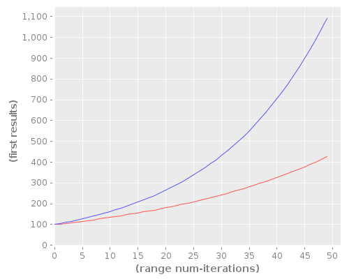

Major progress
Now I am able to write wikilinks to images on the local server and not just hosted remotely. For example,  is an image that I wanted to show at the end of the article on my time-series framework, but which I couldn't because the org plugin wasn't able to show images at the time.
{kind=link}
Another bit of progress is that I finally debugged the little shell shim to allow it to start up the emacs daemon properly. Now I can just have one emacs window running and one emacs daemon in the background.
Remaining TODOs
The remaining work left to do should not be too difficult. I have
some of my own org customization baked into the file which would be
better left up to the user's preferences. I have to decide whether
it makes more sense for the user to customize these preferences in
the ikiwiki configuration file or just in their .emacs. The
latter would be easier for me, but it might be easier for the user
(especially if they have multiple wikis set up) to do it in the
ikiwiki configuration file.
I also need to allow for verbatim inclusion of links. I guess it makes more sense to do this in the standard org manner rather than the ikiwiki manner (with a backslash in front of the link). However, the link must be protected from ikiwiki interpreting it, so things might get a little complex there.
After those two things are completed, however, I think I'm going to call this project done unless I hear feedback from users.